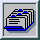

ribbon
is a preprocessor which prepares a simple ribbon representation of a protein
backbone for the
Raster3D
molecular graphics package.
ribbon [-h] [-d[0123456]] pdbfile
or
(to take PDB records from stdin)
ribbon [-h] -d[0123456] -
Ribbon
reads a PDB coordinate file and produces a stream of Raster3D
object descriptor records on stdout describing
a ribbon constructed from a triangular mesh.
The file produced by ribbon may be fed directly to render or
it may be combined with descriptor files produced by other Raster3D utilities.
To describe a the entire protein chain as a single ribbon colored smoothly from
blue at the N-terminus to red at the C-terminus:
ribbon -d2 protein.pdb | render > chain_picture.png
To
color a multi-chain protein with specified colors for each chain:
cat chaincolors.pdb protein.pdb | ribbon -d5 - > chains.r3d
OPTIONS
- -h
- Suppress header records in output. By default ribbon will
produce an output file which starts with header records containing a default
set of scaling and processing options. The -h flag will suppress these header
records so that the output file contains only triangle descriptors. This option
is useful for producing files which describe only part of a scene, and which
are to be later combined with descriptor files produced by other programs.
- -d[0123456]
- By default ribbon requires interactive input to select
ribbon parameters and coloring information. Five default coloring schemes are
implemented, however, and these may be selected as a command line option to
bypass any interactive input.
-d or -d0 same as -d2 below
-d1 solid color ribbon (defaults to blue)
-d2 shade from blue at N-terminus to red at C-terminus
-d3 one surface of ribbon is blue, other surface is grey
-d4 shade front surface from blue to red, back surface is grey
-d5 color separate chains using successive color cards from
input stream.
Note that pattern matching on the color records is not done;
colors are simply taken sequentially as new chains are encountered.
-d6 Take color from nearest CA atom using color match
templates from the COLOUR records at the head of the input file.
DESCRIPTION
The input to ribbon consists of a single text file containing colour
information [optional] and atomic coordinates in PDB data bank
format. Only CA and carbonyl O atom records are required; all other input atoms
are ignored. Ribbon parameters and colouring specified interactively when the
program is run. Keyboard interaction may be bypassed by selecting one of the
default colouring schemes using the -d flag. A triangular mesh ribbon is output
as Raster3D descriptor records. By default the output file contains a set of
header records as required by the render program. The header is constructed to
include a TMAT matrix corresponding to the transformation matrix contained in
file setup.matrix (if it exists), or to the Eulerian angles contained in file
setup.angles (if it exists).
Ribbon produces a continuous smooth trace of the protein backbone. For more
complicated representations of protein secondary structure it is better to use
a different program, e.g. Molscript, rather than ribbon.
ENVIRONMENT
The files setup.matrix and setup.angles, if they exist, affect the header
records produced by ribbon.
AUTHORS
Original ribbon code written by Phil Evans for the CCP4 version of FRODO.
Modification to describe solid ribbons as triangular mesh for Phong shading in
Raster3D package by Ethan A Merritt.
 Back to top
 Raster3D homepage
Raster3D homepage